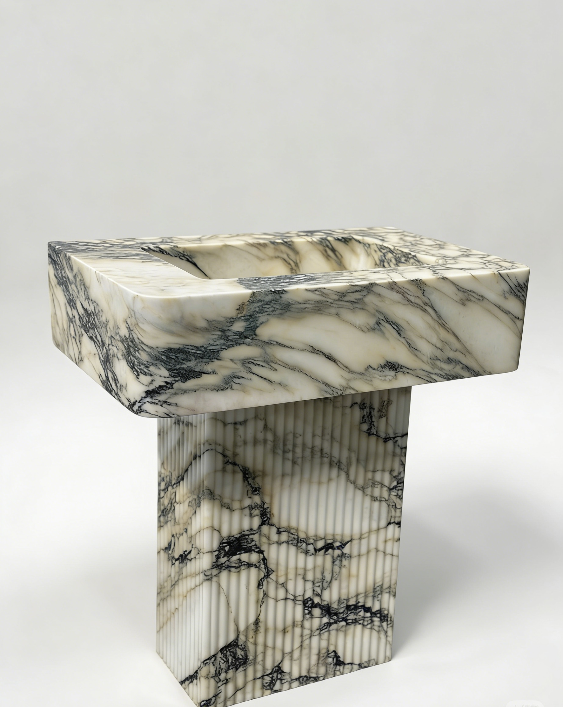
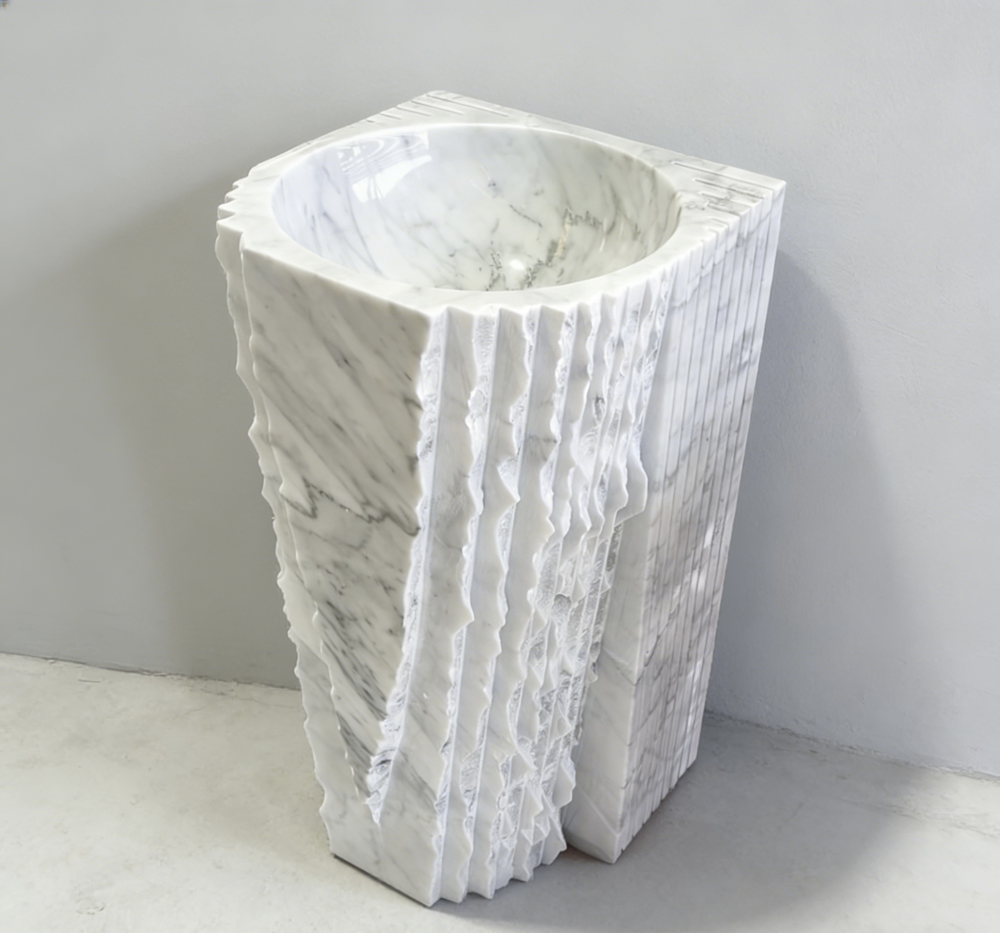
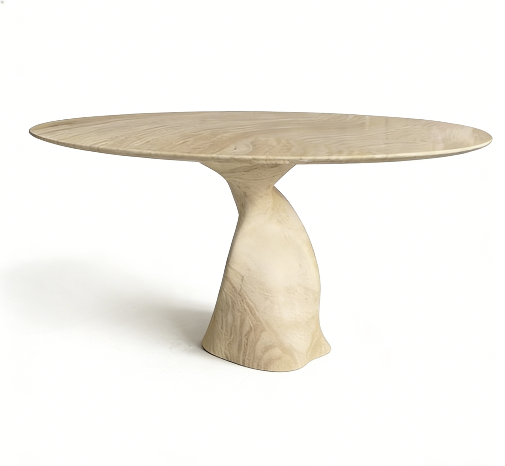
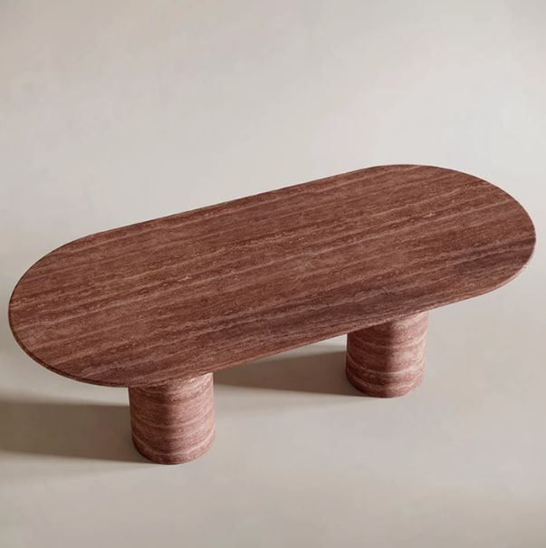
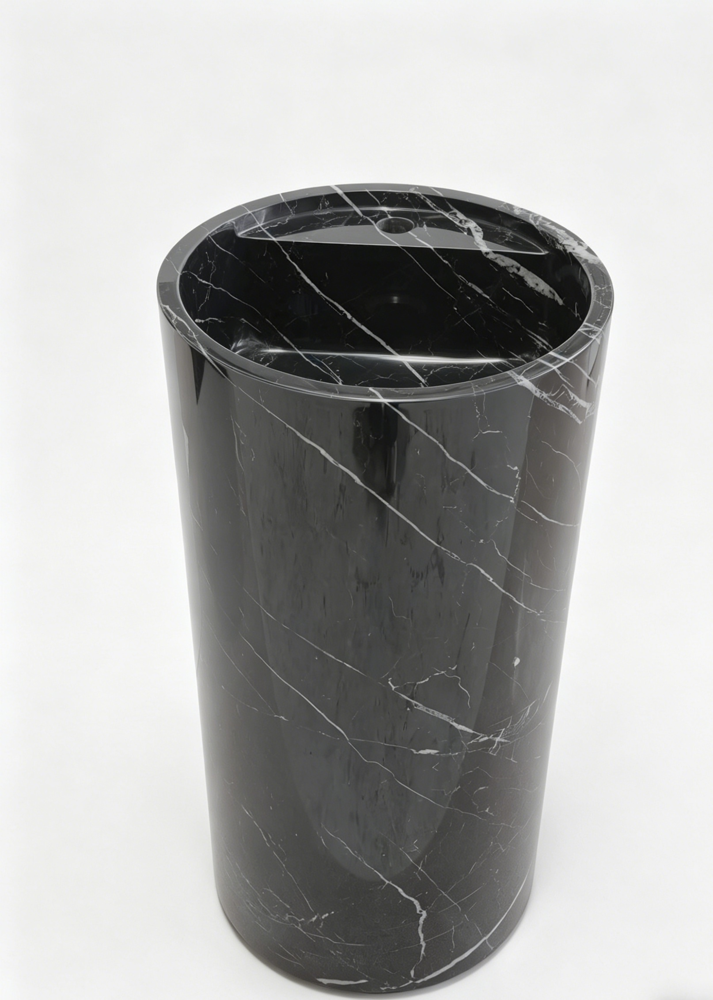

Pedestal sinks, vessel sinks, vanities, bathtubs, shower trays, and coordinated bathroom sets.

Product Catalog
Natural stone pieces shaped for custom production.
Browse product references by use, material, and production direction. Each piece can be adjusted by stone selection, size, finish, edge detail, and packing requirement.
Stone Product Lines
From one-off interior pieces to repeatable OEM/ODM SKUs.
Dining tables, coffee tables, side tables, plinths, consoles, and sculptural stone furniture.
Hotel, villa, retail, and designer project pieces produced from drawings, samples, or references.
Browse Products
Material-led references for custom orders.
Explore common product directions and use the filters to narrow by sink, table, bathroom, or project custom work.
 Sinks / Marble
Green luxury marble pedestal sink
Dramatic natural green marble sink for luxury bathroom interiors.
Sinks / Marble
Green luxury marble pedestal sink
Dramatic natural green marble sink for luxury bathroom interiors.

Sinks / Calacatta Calacatta pedestal sink Clean column profile for luxury residential and hospitality bathrooms. Sinks / Vessel
Hand-crafted vessel sink
Compact production reference for designer collections and project sets.
Sinks / Vessel
Hand-crafted vessel sink
Compact production reference for designer collections and project sets.
 Tables / Travertine
Minimalist travertine dining table
Sculptural base options, matched slabs, reinforced packing for export.
Tables / Travertine
Minimalist travertine dining table
Sculptural base options, matched slabs, reinforced packing for export.

Tables / Dining Graceful travertine dining table Elegant leg geometry with repeatable production detailing. Tables / Minimal
Simple travertine dining table
Simple silhouette, customized slab size, warm natural surface.
Tables / Minimal
Simple travertine dining table
Simple silhouette, customized slab size, warm natural surface.
 Bathroom / Bathtub
Natural marble bathtub
Statement stone bathtub with drawing confirmation and factory inspection.
Bathroom / Bathtub
Natural marble bathtub
Statement stone bathtub with drawing confirmation and factory inspection.

Tables / Red Travertine Red travertine dining table Distinctive reddish-brown veins for signature residential interiors. Bathroom / Sinks
Calacatta Viola marble pedestal sink
Dramatic natural marble sink for high-end bathroom interiors.
Bathroom / Sinks
Calacatta Viola marble pedestal sink
Dramatic natural marble sink for high-end bathroom interiors.
 Bathroom / Sinks
Calacatta white marble pedestal sink design
Integrated natural stone sink design for high-end interiors.
Bathroom / Sinks
Calacatta white marble pedestal sink design
Integrated natural stone sink design for high-end interiors.

Bathroom / Sinks Freestanding cylindrical marble pedestal sink Sculptural round stone sink available in black, green, grey, and custom marble.Material Direction
Show the buyer what can be customized before they ask.
Material
Marble, travertine, quartzite, onyx, limestone
Finish
Polished, honed, brushed, leathered, filled or unfilled
Production
CAD confirmation, slab matching, hand finishing, export packing
Order Type
Single custom piece, project batch, OEM/ODM product line
Custom Request